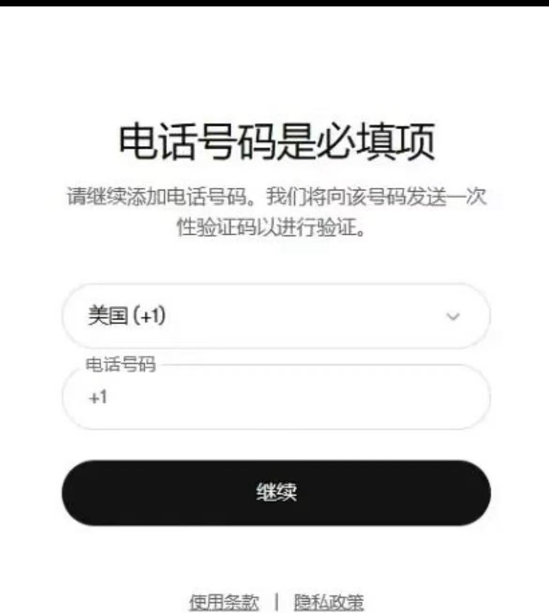
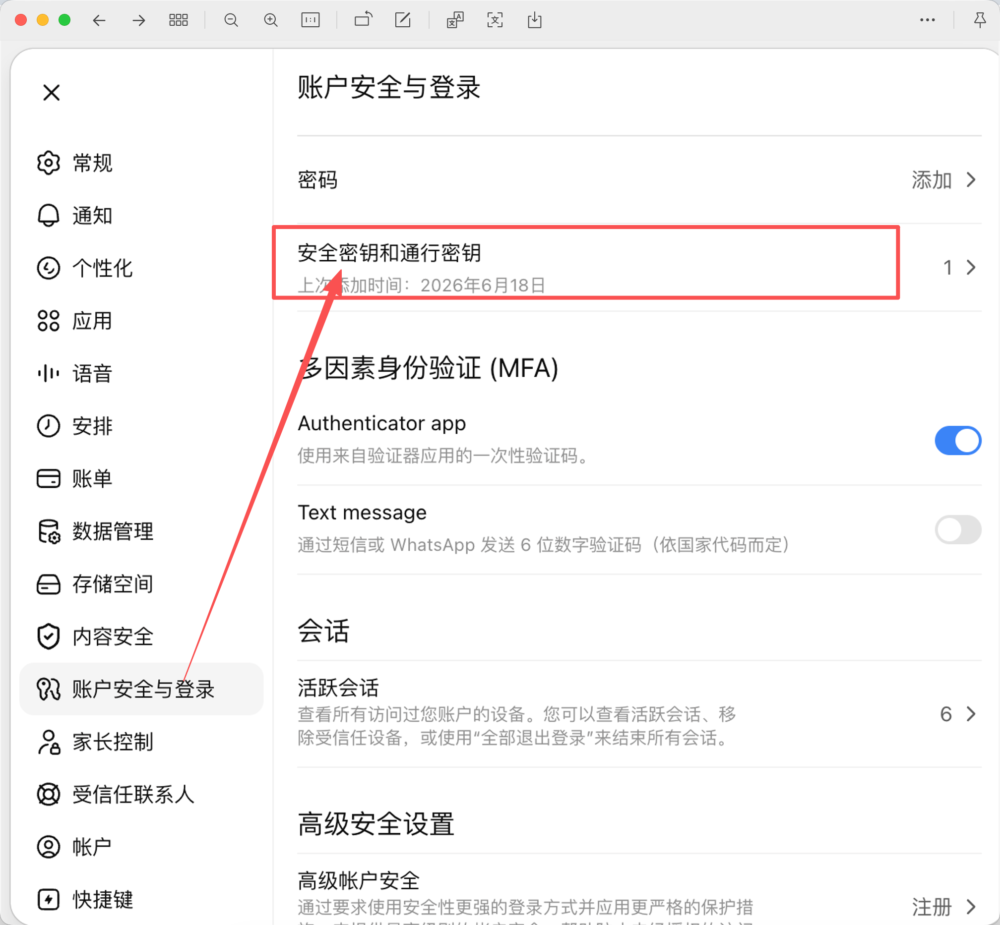
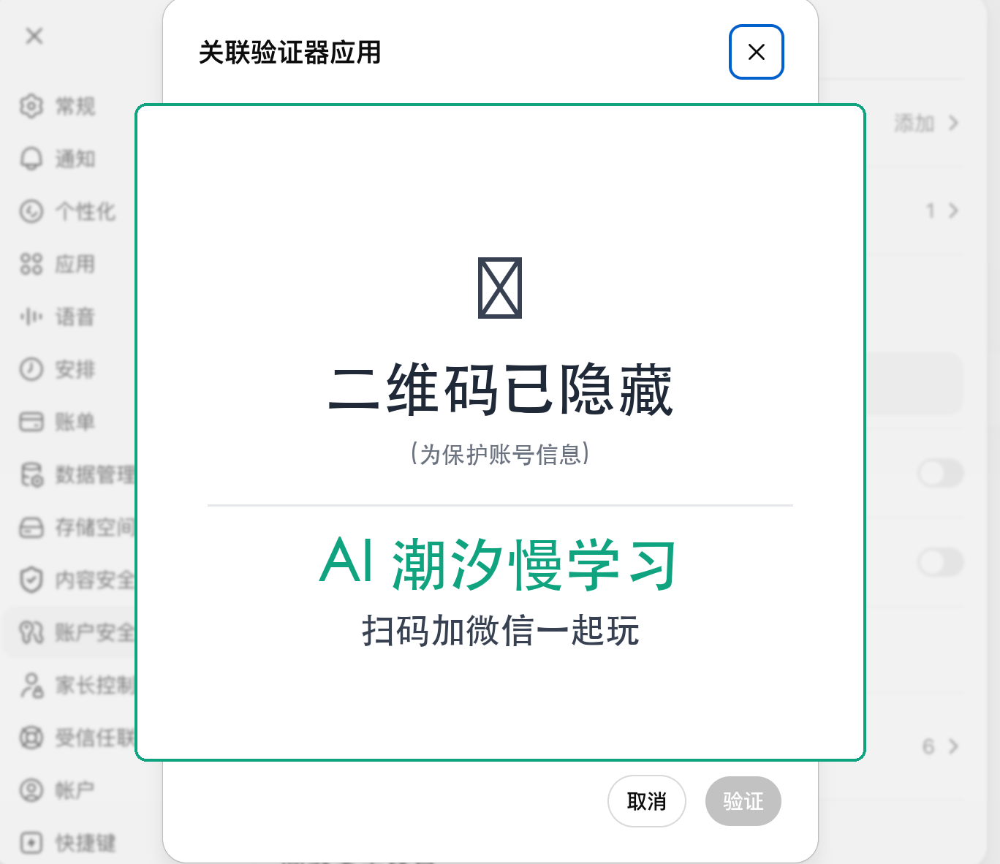
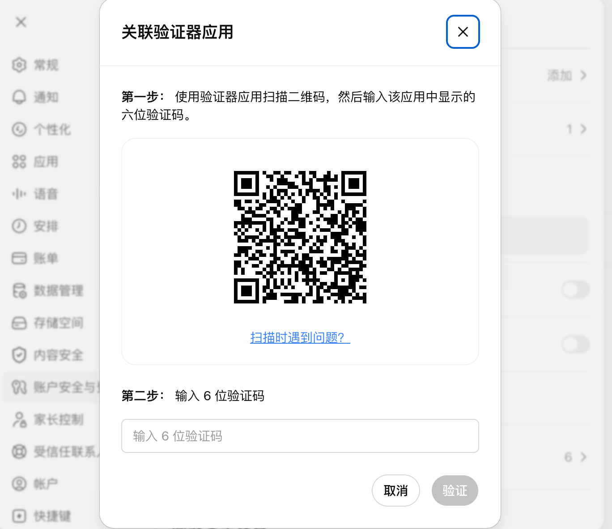
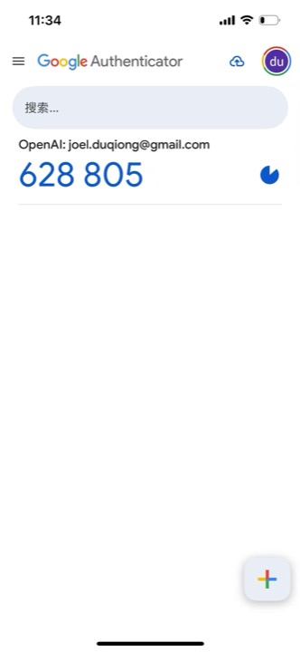

✅ 纯本地,可断网打开。所有截图 + 文字全在本文件里。
⚠️ 前两个方法优先(正面解决),实在都不行再走第 3 个绕过方案。
为什么会有这问题?
Codex CLI 默认用 ChatGPT 账号登录,登录流程是 OAuth,但 ChatGPT 账号出于安全会触发短信验证码(也就是常见的"二次验证 / 2FA")。
你可能遇到这些情况:
- 手机号不可用 / 收不到验证码(出国、换号、信号差)
- 不想给真手机号(隐私)
- 处于没信号的服务器/远程/海外环境
- 只想快速配好环境,不想折腾手机

图:登录时要求绑定手机号,但你可能不想 / 不能
方法 1:安全密钥 / 通行密钥(推荐)
⭐ 推荐:最安全、最省事、一次配好永远用。不需要手机,纯物理设备。
什么是安全密钥 / 通行密钥
- 安全密钥(Security Key):类似 YubiKey 的物理 U 盘设备,插电脑 USB / 触碰 NFC 验证
- 通行密钥(Passkey):基于 FIDO2/WebAuthn 标准,可以是 YubiKey、Mac Touch ID、Windows Hello、iPhone 等
怎么添加
- 打开 [Codex 网页版](https://chatgpt.com),登录你的 ChatGPT 账号
- 进入 账户安全与登录
- 点 安全密钥和通行密钥 → 添加
- 按提示插入 YubiKey / 用 Touch ID / 用 iPhone 扫码 / 用 Windows Hello
- 完成后,登录 Codex CLI 时系统会提示用密钥验证,不需要短信

图:账户安全与登录页,可见"安全密钥和通行密钥"+"Authenticator app"两个开关
优点 vs 缺点
- ✅ 优点:不需要手机 / APP / 验证码;最安全(物理设备 + FIDO2)
- ❌ 缺点:需要买硬件(YubiKey 大概 ¥200-500);或者用设备 Touch ID / Windows Hello(免费但要在登录 Codex 的同一台设备上)
方法 2:Authenticator APP(Google / Microsoft)
免费 + 主流:下载一个 APP,扫个二维码,以后输入 6 位数就行。需要能装 APP 的手机(可能需要科学上网)。
什么是 Authenticator APP
Authenticator APP 是基于 TOTP(基于时间的一次性密码) 的身份验证器。APP 里给每个网站生成一个 6 位数字验证码,30 秒变一次。
推荐 APP
- Google Authenticator:Android / iOS(国内需科学上网)
- Microsoft Authenticator:下载页(同上)
- 其他:1Password、Bitwarden、Authy 等也支持 TOTP(国内可下)
怎么配
- 手机装一个 Authenticator APP(Google 或 Microsoft)
- Codex 网页版 → 账户安全与登录 → 打开 Authenticator app 开关(蓝色)
- 弹出"关联验证器应用"窗口,显示二维码和 6 位验证码输入框
- 打开 APP → 点 + → 选 扫描二维码 → 扫 Codex 这个二维码
- APP 立刻显示 6 位数字(每 30 秒刷新)
- 把 6 位码输入 Codex 的输入框 → 点 验证
- 完成。以后登录 Codex 会要求输入 6 位码,打开 APP 看一眼就行

图:Codex 网页版的"关联验证器应用"弹窗,显示二维码,APP 扫后输入 6 位码

图:Authenticator APP 加新账号入口(点 + → 扫二维码)

图:Google Authenticator 扫完二维码后,显示 OpenAI 账号对应的 6 位码(628 805,30 秒变一次)
优点 vs 缺点
- ✅ 优点:免费、主流(几乎所有网站都支持)、不依赖手机信号(APP 离线算 6 位码)
- ❌ 缺点:需要装 APP(Google/MS 国内可能需科学上网);换手机要迁移;每 30 秒要输入新码
方法 3:绕过登录(本仓库工具,兜底)
⚠️ 最后才用:跳过 Codex CLI 整个登录流程,直接拿 ChatGPT session token 写 `~/.codex/auth.json`。
什么时候用
- 前两个方法都搞不定(没硬件钥匙 / 装不了 APP / 不想折腾)
- 服务器/远程环境,根本没手机或浏览器
- 就是不想给 ChatGPT 手机号
代价
- ⚠️ token 约 10 天过期(OAuth 标准),过期要重新跑一次
- ⚠️ 这个工具拿不到 refresh_token,所以不能自动续
- 用 ChatGPT Plus 订阅登录 Codex 需自行确认是否符合 OpenAI 服务条款
怎么用
- 浏览器登录 [chatgpt.com](https://chatgpt.com)(你已经登录了就行)
- 新开标签,访问
https://chatgpt.com/api/auth/session
- 全选复制返回的 JSON
- 打开本仓库的
index.html
- 粘到输入框 → 选系统 → 命令自动生成
- 复制命令,粘到终端回车
→ 打开绕过工具 (index.html)
怎么选?
按这个顺序选,第一个能搞就用第一个:
- 有 YubiKey / 设备支持 FIDO2 → 走方法 1(最干净,一次配永久用)
- 有手机能装 APP → 走方法 2(免费,主流,几分钟搞定)
- 前两个都不行 / 不想折腾 → 走方法 3(兜底,接受 10 天重做一次)
个人推荐
- 长期方案:方法 1(硬件钥匙) > 方法 2(APP)
- 临时方案:方法 2(APP,几分钟搞定)
- 应急/隐私方案:方法 3(跳过,接受 10 天重做)
相关链接